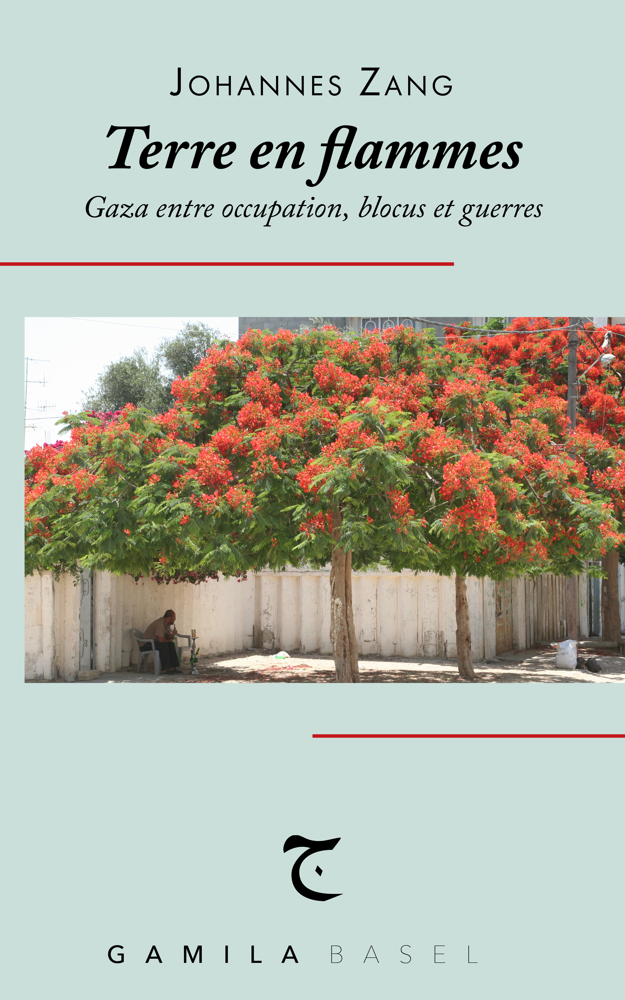

Johannes Zang
Terre en flammes
Écrit dans l'urgence et publié à Cologne en juillet 2024, Kein Land in Sicht? (litt. « Aucune terre en vue ? ») visait à faire entendre d'autres voix que celles - toujours les mêmes - qui donnaient dans les médias allemands une lecture totalement unilatérale des événements. Le livre de Johannes Zang, qui connaît parfaitement la région pour avoir vécu des deux côtés de la frontière, paraît enfin en français. Même si, entre-temps, la situation a terriblement empiré, ces 130 courts chapitres gardent tout leur intérêt. Ils sont accompagnés d'une chronologie et d'une bibliographie commentée, mises à jour jusqu'en avril 2026, 30 mois après l'éclatement d'un « conflit » qui, depuis lors, est devenu ouvertement guerre d'extermination.
Traduit de l'allemand par Christian Viredaz.